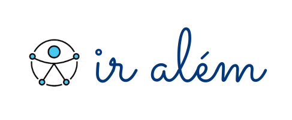
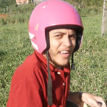

Nossa seleção de Youtubers

Vai uma mãozinha aí?
“Vai uma mãozinha aí?” é o maior canal sobre deficiência do YouTube Brasil, criado pela Mariana Torquato. Um canal livre de moldes ou padrões. Afinal, ser humano é ser diferente. O canal possui 158 mil inscritos, mais de 5 milhões e meio de visualizações e os vídeos são postados semanalmente abrangendo diversos temas e não se limitando apenas a assuntos relacionados à deficiência.

Hawk
O canal “Hawk” mostra o cotidiano de forma simples e ao mesmo tempo fantástica, produzindo arte. Hauk inicialmente ficava por trás das câmeras enquanto filmava o amigo galego, mas com o sucesso do canal mudou essa realidade e começou a aparecer nos vídeos também e juntos eles produzem um conteúdo incrível. O canal possui 237 mil inscritos e mais de 18 milhões de visualizações.

Violeta
O canal “Violeta” pertence a Andreza Alves Pinto, influenciadora, cantora e youtuber em seu canal ela aborda diversos temas como maquiagem, música, sonhos, tabus e experiências e um universo de infinitas coisas! O canal possui 4 mil inscritos e mais de 100 mil visualizações.

O Menor Casal do Mundo
O canal “O menor casal do mundo” é de um casal de anões, que está no guiness book. O canal possui 437 mil inscritos, mais de 23 milhões de visualizações e são postados vídeos duas vezes por semana. Os vídeos abrangem diversos temas como culinária, cuidados com saúde e aparência, tutoriais e vlogs. O vídeo em questão mostra um tour pela sua casa nova adaptada!
Biônico Play
O canal “Biônico Play” pertence a um gamer de sucesso, além dos vídeos relacionados ao jogos ele posta vlogs, desafios, experiências, interações com inscritos fãs de seu trabalho e muito mais! O canal possui 77 mil inscritos e mais de 2 milhões de visualizações.
Sobre Rodas
O canal “Sobre rodas” foi criado pelo casal Zeli e Éder para mostrar como é a vida de uma pessoa com deficiência, que mesmo com obstáculos podem sim ter uma vida social como qualquer outra pessoa e muitas vezes fazer muito mais coisas do que uma pessoa sem deficiência alguma. O canal possui 16 mil inscritos e mais de 3,8 milhões de visualizações.
Markinhos Sobre Rodas
O canal “Markinhos sobre Rodas” foi criado para mostrar adaptações na vida de um cadeirante, para que possa ajudar outras pessoas que são novas na vida sobre rodas. O canal tem diversos vídeos mostrando os passeios handbike, triciclos adaptados e muitos outros temas. O canal possui 1,2 mil inscritos e mais de 40 mil visualizações.

Matheus Vandré
O canal “Matheus Vandré” conta histórias sobre rodas, uma nova forma de ver a vida, contada com muito amor e descontração. Também faz vídeos de perguntas e respostas sobre si mesmo e sua deficiência, sobre a sexualidade e tudo isso interagindo com os espectadores de seu conteúdo. O canal possui 6 mil inscritos e mais 340 mil visualizações.
Cadeira Ativa
O canal “Cadeira Ativa” é do Altair Marangne, um cadeirante praticante de atletismo, para canoagem, roller ski, ski cross country e handbike e é voltado para divulgar esportes adaptados para pessoas com deficiência, com vídeos mostrando treinos e dia-a-dia. O canal possui 12,5 mil inscritos e mais de um milhão de visualizações
Blog do Cadeirante
No canal “Blog do Cadeirante” encontra-se dicas para o dia-a-dia de quem tem mobilidade reduzida, relatos vivenciais, test drives de veículos que podem ser adquiridos com desconto e mais sobre o mundo das pessoas com deficiência. O canal possui 25 mil inscritos e mais de 3,7 milhões de visualizações.
Tocando a Vida
O canal “Tocando a Vida” é do fisioterapeuta e paratleta Marcos Melo Junior, o canal aborda diversos temas como esporte, saúde, turismo, acessibilidade, dia-a-dia e há também muita interação com os inscritos trocando informações. O canal possui 7,5 mil inscritos e mais de 430 mil visualizações.
Make Sobre Rodas
O canal “Make sobre rodas” mostra dicas, tutoriais sobre maquiagem e também sobre moda inclusiva, dia-a-dia e experiências. O canal possui 17,6 mil inscritos e mais de 800 mil visualizações.